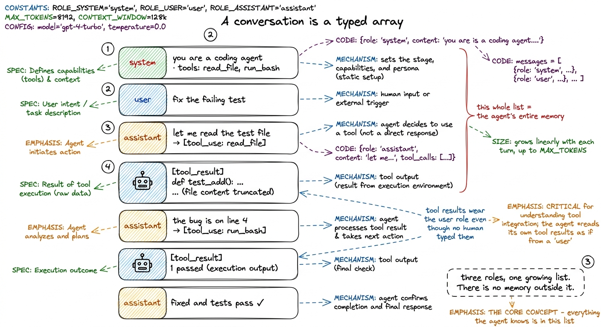
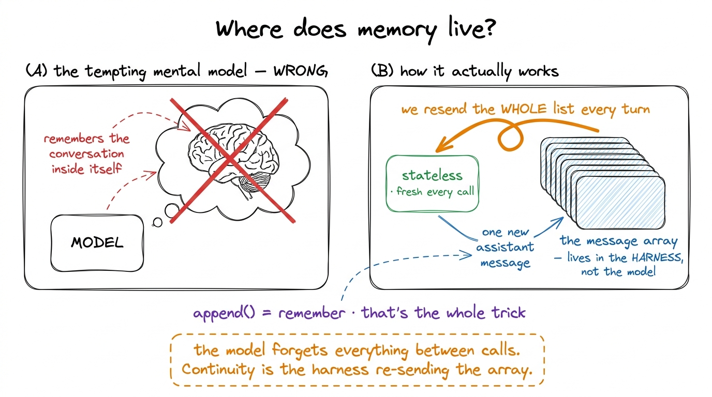
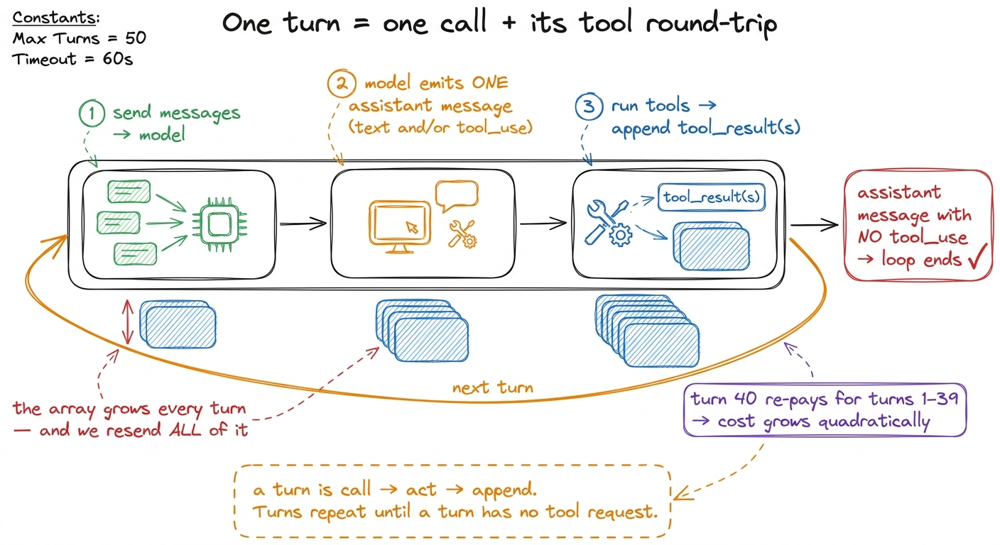
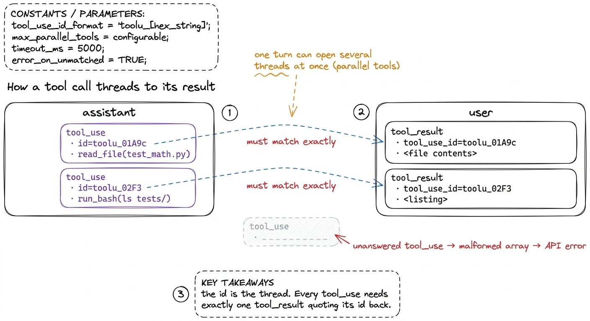

Messages, turns & roles
In the bare harness we spun a loop around a model and watched it act on its own. There was one line in that loop I asked you to hold onto: messages.append(...). We appended twice a lap — once for the model's reply, once for the tool results — and I called it "the agent remembering." That phrase was doing a lot of quiet work, and this chapter unpacks it fully. Because once you truly see that the message array is the agent's state, half the mysteries of building a harness dissolve. There is no hidden memory anywhere. There is just this list, and what you choose to put in it.
Let me build that idea from the ground up: what a message is, what a turn is, and how tool calls and their results thread back to each other by id.
A conversation is a typed array
Open the hood on Claude Code, Cursor, pi, or Hermes and at the very center you will find the same humble object: a list of messages, in order, that grows as the session runs. Not a database, not a graph, not a magic context blob — a plain array you could print. Each message has a role and some content, and the roles are a small fixed vocabulary.
system— the standing instructions and identity. Who the agent is, what tools exist, how to behave. Set once, sits above everything.1 In the Anthropic API the system prompt is a separate top-levelsystemfield rather than a message withrole: "system"— but conceptually it plays the exact role described here. Other providers put it inside the array as the first element. Same idea, slightly different plumbing; your model client papers over the difference.user— input coming into the model. The human's request, yes — but also, and this surprises people, the results of tool calls. Anything the model didn't itself generate arrives as a user-role message.assistant— everything the model produced: its prose, its reasoning, and its requests to call tools.
That's the whole grammar. A session is nothing but these three roles interleaved, in the order they happened.

figure rendering · A session is just system / user / assistant messages in order. Tool reStare at that figure for a second, because the non-obvious detail is cards 4 and 6. A tool result — the output of read_file, the stdout of run_bash — comes back into the model wearing the user role. From the model's point of view, "the world" and "the human" are the same channel: both are things it did not generate that it now must respond to. That symmetry is worth internalizing. The model author's job is to produce assistant messages; everything else on the tape is context flowing in.
The array is the state — there is nowhere else
Here is the claim I want to hammer, because everything downstream leans on it. The model is stateless. Every call to call_model(messages, tools) starts from absolute zero. It has no recollection of the previous call, no variable it stashed, no scratchpad it kept. The only reason a session feels continuous — the reason the agent "remembers" that you asked it to fix a test five turns ago — is that we send the entire history back on every single call.
So the agent's memory is not a feature of the model. It is a feature of us re-sending the array. Appending to messages is, quite literally, the act of remembering. Deleting from it is forgetting. Rewriting it is lying to yourself. When we get to compaction, all we are doing is deciding which parts of this array to keep when it grows too big to resend — and when we get to durability, all we are doing is saving this array to disk so a crashed process can pick the tape back up.

figure rendering · The model is stateless and forgets everything between calls. The illusThis is liberating once it lands. There is no black box to reverse-engineer. If you want to know what the agent "knows" at turn 40, you print messages — that array, in full, is the complete truth of its mind at that instant. Debugging a harness is, more than anything, the practice of reading the tape.
What is a "turn"?
The word turn gets thrown around loosely, so let me pin it down for our purposes. A turn is one model call plus the tool round-trip it triggers. Concretely, one turn is:
- We send the current
messagesto the model. - The model produces one assistant message — possibly with text, possibly with one or more tool-call requests.
- If it asked for tools, we run them and append their results.
That whole unit — call, act, append — is a turn. The agent loop is just turns repeating until the model produces a turn with no tool request, which is its way of saying "I'm done." A simple question is one turn. "Fix the failing test" might be six.2 Providers count and bill turns differently from how the harness thinks about them, and "turn" in a product UI ("you have 40 turns left") is usually a coarser billing unit than the loop-iteration sense we use here. When this book says "turn" we mean one lap of the loop: one call_model and its tool round-trip.

figure rendering · A turn is one model call plus the tool round-trip it triggers: send, eNotice something important about cost. Because we resend the whole array each turn, a long session gets quadratically expensive: turn 40 pays to re-read everything from turns 1 through 39. This is not a bug — it is the direct consequence of statelessness — but it is exactly why the context engine exists. Every token you leave on the tape, you pay for again next turn. The tape is your memory and your bill.
Threading: how a tool call finds its result
Now the piece that trips up everyone building their first harness. When the model asks for a tool, it does not just say "run read_file." It emits a structured content block inside its assistant message — a tool_use block carrying three things: a name, an input object of arguments, and, crucially, an id.
That id is the thread. When we run the tool and hand the output back, we don't just append the raw text — we wrap it in a tool_result block that carries a matching tool_use_id pointing back at the exact call it answers. The model then reads the array and knows which result belongs to which request, even when it fired several at once.
# Turn N: the model's assistant message contains a tool_use block
{
"role": "assistant",
"content": [
{"type": "text", "text": "Let me check the test file."},
{
"type": "tool_use",
"id": "toolu_01A9c", # <-- the thread's handle
"name": "read_file",
"input": {"path": "test_math.py"},
},
],
}
# Turn N (our reply): the tool_result must quote that same id back
{
"role": "user",
"content": [
{
"type": "tool_result",
"tool_use_id": "toolu_01A9c", # <-- must match, or the model is lost
"content": "def test_add():\n assert add(2, 2) == 5\n",
},
],
}Get this id matching wrong and you get subtle, maddening bugs: the model attributes the output of one tool to another, or the API rejects the request outright because a tool_use went unanswered. Two rules keep you safe, and real harnesses enforce both.
First: every tool_use must be answered. If a turn's assistant message contains three tool_use blocks, the very next user message must contain three tool_result blocks with the three matching ids — no more, no fewer. A dangling tool call (one requested but never answered) is one of the most common ways to corrupt a message array.3 This is why an interrupt or a crash mid-tool is dangerous: if you've already appended the assistant's tool_use but die before appending the tool_result, your saved array is now malformed and the next call will error. Handling this cleanly is a core job of durable execution — you either checkpoint before the tool_use lands or you synthesize a "tool was interrupted" result.
Second: the model can request several tools in one turn. Modern models emit multiple tool_use blocks in a single assistant message when the calls are independent — read three files at once, say. Our loop already handles this: recall the for block in reply.content in the bare harness, which walked every block and produced a result for each. Parallel tool calls are just several threads opened in one turn and closed in one reply.

figure rendering · Tool calls and results are stitched together by id: each tool_use carrWatching a real session on the tape
Let me put it all together with a concrete trace, because seeing the array grow is worth more than any amount of prose. Suppose the user says "is the add function correct?" Here is the tape, turn by turn, written compactly:
[system] you are a coding agent. tools: read_file, run_bash
[user] is the add function correct?
--- turn 1 ---
[assistant] "let me read it." + tool_use(id=t1, read_file "math.py")
[user] tool_result(t1) → "def add(a,b): return a - b"
--- turn 2 ---
[assistant] "there's a bug — it subtracts. let me run the tests."
+ tool_use(id=t2, run_bash "pytest -q")
[user] tool_result(t2) → "1 failed: test_add"
--- turn 3 ---
[assistant] "confirmed: add uses '-' instead of '+', and the test fails.
it is not correct." (no tool_use → the loop ends)Three turns, and every line above is an entry in one array. On turn 3 the model sees all of turns 1 and 2 — the file contents, the test output, its own earlier reasoning — because we resent the whole tape. Its final answer is grounded not in memory but in the visible history. Remove any line from the array and you change what the model knows. That is the entire game.
What this buys you, and what it still misses
Once you hold "the array is the state" firmly, a surprising number of harness features reveal themselves as simple operations on this list:
- Memory (CLAUDE.md) is just prepending durable facts to the array before the session starts.
- Compaction (summarization) is replacing a long stretch of old messages with a short summary message.
- Durability (checkpointing) is serializing the array to disk after each turn so a crash can reload it.
- Sub-agents (handoffs) are spawning a fresh array for a child, then folding its result back as one message in the parent's array.
They are all, at bottom, edits to this one tape. Which is exactly why we spent a whole chapter on it before touching any of them.
What the array does not solve, on its own, is its own growth. Nothing here stops the tape from ballooning past the context window, at which point the model physically cannot see the early turns and resending everything stops being an option. That pressure — a growing state versus a fixed window — is the central tension of Layer 3, the context engine, and it is where we head next. But now you carry the right mental model into it: there is no hidden memory to manage, only this array — and context engineering is the art of deciding, every single turn, what earns a place on the tape.